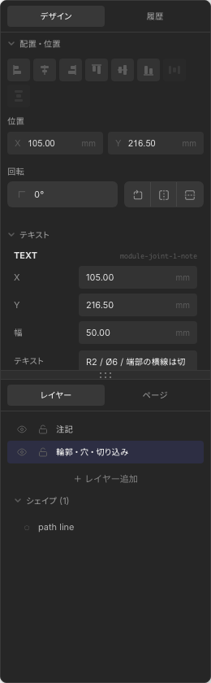

編集操作
図形の選択、プロパティ編集、整列・均等配置、グループ化、合成・くり抜き、Undo/Redo について説明します。
選択と移動
選択ツール (V) で図形をクリックすると選択されます。 Shift を押しながらクリックで複数選択、ドラッグで範囲選択もできます。
- 選択した図形はハンドル付きの枠で表示されます
- 枠内をドラッグして移動、角のハンドルでサイズ変更
- 矢印キーで 1 mm ずつ移動（Shift + 矢印で 10 mm）
- Ctrl+A（Mac: Cmd+A）ですべての図形・寸法線を選択

Design タブ（プロパティ）
右パネルの Design タブでは、選択中の図形の座標・サイズ・塗り・線色・線幅などを編集できます。 複数選択時は整列ボタンに加え、外観の一括変更もできます。

外観（塗り・線色）
図形を 1 つ選択すると、プロパティ一覧の 外観 セクションで色を指定できます。 2D 図面上の表示に加え、3D プレビューのメッシュ色にも反映されます（詳細は 3D 生成 — 色の反映）。
| 項目 | 内容 |
|---|---|
| 塗り | カラーピッカーで塗りつぶし色を指定。なし ボタンで透明（輪郭のみ）に戻せます |
| 線色 | 輪郭線の色。テキスト図形では文字色として使われます |
| プリセット | 8 色のスウォッチをクリックすると、塗りまたは線色に即適用 |
| 新規描画 | ここで選んだ色は、次に描く矩形・円・線などのデフォルト色として記憶されます |
塗りを設定できるのは 矩形・円・パス・閉じたベジェ です。線・テキストは線色のみ、寸法線は専用の「寸法線色」項目を使います。
2 つ以上の図形を選択したときは 外観（一括） が表示され、選択中の図形すべてに同じ塗り・線色を適用できます。
| 項目 | 内容 |
|---|---|
| 位置・サイズ | 矩形は X/Y/W/H、円は中心と半径など、図形タイプごとの数値 |
| 線幅 | 細 / 中 / 太 |
| 角丸 (rx) | 矩形のみ。角の丸み |
| 回転・反転 | 表示、整列、Profile、3D 生成に反映されます |
サイズの一括編集
同じタイプの図形を 2 つ以上選択すると、Design タブに サイズ（一括） セクションが表示され、 選択中のすべての図形に同じ寸法を一度に適用できます。たとえば複数の円を選択して半径をまとめて揃える、といった操作ができます。
| 図形タイプ | 一括編集できる項目 |
|---|---|
| 円 | 半径 |
| 矩形 | 幅・高さ |
| 楕円 | RX・RY（横半径・縦半径） |
| テキスト | 文字サイズ |
- 選択した図形で値が揃っている場合は現在値を表示、バラバラの場合は 混在 と表示されます
- 値を入力すると、選択中の同タイプ図形すべてに即座に反映されます（中心・位置はそのまま）
- ロックした図形には適用されません。変更は 1 回の操作として記録され、Undo で一度に戻せます
異なるタイプの図形（例: 円と矩形）が混ざった選択では、共通の寸法がないため「サイズ（一括）」は表示されません。外観や整列の一括操作はそのまま使えます。
整列・均等配置
2 つ以上の図形を選択すると、Design タブに整列ボタンが表示されます。
| 操作 | 説明 |
|---|---|
| 左 / 中央 / 右揃え | 水平方向の位置を揃える |
| 上 / 中央 / 下揃え | 垂直方向の位置を揃える |
| 水平 / 垂直均等分布 | 3 つ以上選択時。端を固定して間隔を均等化 |
1 つだけ選択している場合は、ページ（用紙）の端や中央に揃える操作も使えます。
コピー・複製・削除
- Ctrl+C / Ctrl+V — コピーして貼り付け
- Ctrl+D — 選択図形をその場で複製
- Delete / Backspace — 選択図形を削除
グループ化
2 つ以上の図形を選択して Ctrl+G でグループ化できます。 グループは 1 つの図形のように移動・選択できます。 グループを 1 つ選択した状態で Ctrl+Shift+G すると解除されます。
グループ自体は 3D 輪郭には使えません。グループ内の各図形が個別に Profile 化されます。
テキストのアウトライン化
テキスト図形を選択すると、Design タブに テキスト編集 と アウトライン化 ボタンが表示されます。 右クリックメニューからも同じ操作ができます。
- テキスト編集 — 文字列・フォント・サイズ・行間・色をダイアログで編集
- アウトライン化 — 各文字を path 図形に変換し、1 つのグループにまとめる
アウトライン化後は元のテキストは削除され、グループ内の path 図形が 3D 生成の輪郭として使えます。 文字色（線色）は path の塗り色として引き継がれます。

Electron 版でのみ利用可能です。macOS では Core Text、それ以外の OS では fontkit で輪郭を生成します。
合成・くり抜き（Boolean）
2 つ以上の閉じた輪郭（矩形・円・閉じたベジェ・path など）を選択すると、輪郭演算が使えます。右クリック →「ブール演算」、または Design タブのボタンから実行できます。
| 操作 | ショートカット | 説明 |
|---|---|---|
| 結合 (Union) | Alt+Shift+U | 複数の輪郭を 1 つの path にまとめる |
| 減算 (Subtract) | Alt+Shift+S | 前面から背面を引く（穴あけ） |
| 交差 (Intersect) | Alt+Shift+I | 重なり部分だけを残す |
| 除外 (Exclude) | Alt+Shift+E | 重なり部分を除いた部分を残す |
| 統合 (Flatten) | Alt+Shift+F | 選択中の path / グループを 1 つの path に平坦化 |
結果は新しい path 図形として生成され、3D の輪郭としても利用できます。
Undo / Redo と History タブ
図形の追加・移動・削除など、ドキュメントに影響する操作は Undo 対象です。 ツールバーの Undo/Redo ボタン、または Ctrl+Z / Ctrl+Y（Mac: Cmd+Z / Cmd+Shift+Z）で元に戻せます。
右パネルの History タブでは、操作履歴の一覧が表示されます。 行をクリックすると、その時点の状態にジャンプできます。 ズームやパン、ツール切替は履歴に含まれません。

レイヤーのロック
Layers タブでレイヤーをロックすると、そのレイヤー上の図形は選択・編集できなくなります。 下書き用レイヤーや参考線レイヤーの保護に便利です。